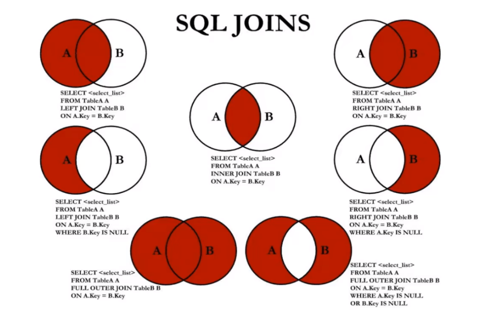
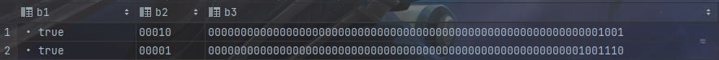

SQL分类
DDL：数据定义语言
- CREATE
- ALTER
- DROP
- RENAME
- TRUNCATE
DML：数据操作语言
- INSERT
- DELETE
- UPDATE
- SELECT
DCL：数据控制语言
- COMMIT
- ROLLBACK
- SAVEPOINT
- GRANT
- REVOKE
SELECT语句
查询常量
SELECT 19;
SELECT 1+1 FROM DUAL; # dual：伪表
SELECT 0, 123, employee_id, last_name
FROM employees;查询所有字段
SELECT * FROM employees;查询部分字段
SELECT employee_id, last_name, salary
FROM employees;列的别名
/*
两种方式：
1.列原名 别名，如下面语句的employee_id emp_id
2.列原名 AS 别名，如下面语句中的last_name AS lname
3.基于前两种方式，可以用双引号括起别名，用于别名有空格的情况，如下面语句的salary*12 “annual sal”，但不要使用单引号
*/
SELECT employee_id emp_id, last_name AS lname, salary*12 “annual sal”
FROM employees;去除重复行
# 正确用法
SELECT DISTINCT department_id
FROM employees;
# 错误用法
SELECT salary, DISTINCT department_id
FROM employees;
# 不会报错，department_id 和 salary 作为整体
SELECT DISTINCT department_id， salary
FROM employees;空值参与运算
# 空值：null
# null不等于0，'',’null'
# null值参与运算， 结果一定也为空
# 绩效比例commission_pct为null时，年工资也为null
SELECT employee_id salary "月工资", salary * (1 + commission_pct) * 12 "年工资"
# 把null当成0
SELECT employee_id salary "月工资", salary * (1 + IFNULL(commission_pct, 0)) * 12 "年工资"着重号 `
# 用于表名和关键字相同时
SELECT * FROM ORDER;
SELECT * FROM `order`;过滤条件
# WHERE 紧跟在 FROM 子句后
# WHERE 筛选后面的条件为1的数据， 0和NULL会被过滤
# WHERE 不能使用类的别名
SELECT *
FROM employees
WHERE last_name = 'King';排序
# 如果没有使用排序，查询返回的数据默认按照添加数据的顺序
# 使用ORDER BY对数据进行排序，升序ASC， 降序DESC，默认升序
# 按照salary从高到低顺序显示员工信息
SELECT employee_id, last_name, salary
FROM employees
ORDER BY salary DESC;
# 按照salary从低到高顺序显示员工信息
SELECT employee_id, last_name, salary
FROM employees
ORDER BY salary ASC; # ASC可以不写
SELECT employee_id, last_name, salary
FROM employees
ORDER BY salary;
# 使用类的别名排序
SELECT employee_id emp_id, last_name AS lname, salary*12 “annual sal”
FROM employees;
ORDER BY annual_sal;
# 二级排序
# 显示员工信息，按照department_id降序排序，salary升序排序
SELECT employee_id, last_name, salary
FROM employees
ORDER BY department_id DESC, salary ASC;分页
# 使用LIMIT使用分页操作
# LIMIT 偏移量,条目数
# LIMIT 0,20 表示偏移量为0，显示20条数据
SELECT employee_id, last_name
FROM employees
LIMIT 0,20;
# MySQL 8.0新特性
# LIMIT 条目数 OFFSET 偏移量
SELECT employee_id, last_name
FROM employees
LIMIT 20 OFFSET 0;显示表结构
DESCRIBE employees;
DESC employees;运算符
算术运算符
+、-、*、/或DIV、%或MOD
SELECT 100 + '1' FROM DUAL; # 返回101， 会将字符串转换为数值
SELECT 100 + 'a' FROM DUAL; # 返回100，将非数字字符串当作0
SELECT 100/0 FROM DUAL; # 返回NULL比较运算符
比较结果为真返回1， 为假返回0， 其他情况返回NULL
= <=>（安全等于） <>（不等于） != < <= > >=
# 两边都是字符串，按照ANSI进行比较
# 两边都是数字，按照数值比较
# 数字和字符串相比，会产生字符串的隐形转换
# null参与运算返回null
SELECT 1 = 2, 1 != 2,1 = '1',0 = 'A' FROM DUAL;# 返回0，1，1，1
SELECT 'A' = 'A', 'A' = 'B' FROM DUAL;# 返回1，0
SELECT 1 = NULL, NULL = NULL FROM DUAL;# 返回NULL, NULL
# <=> 安全等于 在无NULL时等同于= ， 在有NULL时，两边都是NULL为1， 只有一个NULL为0
SELECT 1 <=> NULL, NULL <=> NULL FROM DUAL;# 返回0，1
SELECT employee_id, last_name, salary
FROM employees;
WHERE commission_pct <=> NULL;
SELECT employee_id, last_name, salary
FROM employees;
WHERE NOT commission_pct <=> NULL;非符号类型运算符
# IS NULL / IS NOT NULL / ISNULL 判断字段是否为NULL
SELECT employee_id, last_name, salary
FROM employees;
WHERE commission_pct IS NOT NULL;
# LEAST() 求最小值/ GREATEST() 求最大值
SELECT LEAST('A', 'B', 'E'), GREATEST('A', 'B', 'E') FROM DUAL; # 返回A E
# BETWEEN 条件一 AND 条件二 包含条件一和条件二,要求条件一为下界， 条件二为上界，不能交换
# 查询工资在6000和8000的员工信息
SELECT employee_id, last_name, salary
FROM employees
WHERE salary BETWEEN 6000 AND 8000;
SELECT employee_id, last_name, salary
FROM employees
WHERE salary >= 6000 && SALARY <= 8000;
# IN \ NOT IN
# 查询部门为10，20，30的员工信息
SELECT last_name, salary, department_id
FROM employees
WHERE department_id = 10 OR department_id = 20 OR department_id = 30
SELECT last_name, salary, department_id
FROM employees
WHERE department_id IN (10,20,30);
# LIKE 模糊查询
# 查询last_name中包含字符a的元素信息
SELECT last_name, salary, department_id
FROM employees
WHERE last_name LIKE '%a%'; # '%'代表不确定个数的字符
# 查询last_name中包含字符a和e的元素信息
SELECT last_name, salary, department_id
FROM employees
WHERE last_name LIKE '%a%' AND last_name LIKE '%e%'; # '%'代表不确定个数的字符
# 查询last_name中包含第二个字符是a的元素信息
SELECT last_name, salary, department_id
FROM employees
WHERE last_name LIKE '_a%'; # '_'代表一个字符
# 正则表达式
# REGEXP \ RLIKE: 正则表达式
SELECT 'shlstart' REGEXP '^s','shlstart' REGEXP 't$','shlstart' REGEXP 'hk'
FROM DUAL;逻辑运算符
! / NOT && / AND || / OR XOR（异或）
多表查询
等值连接和非等值连接
# 错误写法，缺少了连接条件，会出现笛卡尔积
SELECT employee_id, department_name
FROM employees, departments;
SELECT employee_id, department_name
FROM employees CROSS JOIN departments;
# 正确写法
# 等值连接
# 如果查询语句中出现了多个表中都存在的字段，则必须指明字段所在的表
SELECT employee_id, department_name,employees.department_id
FROM employees, departments;
WHERE employees.department_id = departments.department_id;
# 给表起别名,起了别名必须用
SELECT emp.employee_id, dept.department_name,emp.department_id
FROM employees emp, departments dept;
WHERE emp.department_id = dept.department_id;
# 非等值连接
SELECT last_name, salary, grade_level
FROM employees e, job_grades
WHERE e.`salary` BETWEEN j.`lowest_sal` AND j.`highest_sal`;自连接和非自连接
# 自连接
# 查询员工id、名称last_name及其上级id、名称
SELECT emp.empployee_id, emp.last_name, man.employee_id, man.last_name
FROM employees emp, employees man
WHERE emp.manager_id = man.employee_id内连接和外连接
# 内连接：合并具有同一列的两个以上的表的行，结果集中不包含一个表与另一个表不匹配的行
# SQL92(MySQL不支持)实现内连接
SELECT employee_id, department_name,employees.department_id
FROM employees, departments;
WHERE employees.department_id = departments.department_id;
# SQL99实现外连接JOIN ON
SELECT emp.last_name, dept.department_name
FROM employees emp INNER JOIN departments dept
ON emp.department_id = dept.department_id;# INNER可以省略
# 外连接：合并具有同一列的两个以上的表的行，结果集中不仅包含一个表与另一个表不匹配的行，还包含左表 或 右表中不匹配的行
# 左外连接：合并具有同一列的两个以上的表的行，结果集中不仅包含一个表与另一个表不匹配的行，还包含左表中不匹配的行
# 右外连接：合并具有同一列的两个以上的表的行，结果集中不仅包含一个表与另一个表不匹配的行，还包含右表中不匹配的行
# 满外连接：合并具有同一列的两个以上的表的行，结果集中不仅包含一个表与另一个表不匹配的行，还包含左表 和 右表中不匹配的行
# 左外连接
# 查询所有员工的last_name和department_name
# SQL92（MySQL不支持）语法实现外连接：使用+
SELECT emp.last_name, dept.department_name
FROM employees emp, departments dept
WHERE emp.department_id = dept.department_id(+);
# SQL99语法实现外连接：使用OUTER JOIN ON
SELECT emp.last_name, dept.department_name
FROM employees emp LEFT OUTER JOIN departments dept
ON emp.department_id = dept.department_id;# OUTER可以省略
# 右外连接
# SQL92（MySQL不支持）语法实现外连接：使用+
SELECT emp.last_name, dept.department_name
FROM employees emp, departments dept
WHERE emp.department_id(+) = dept.department_id;
# SQL99语法实现外连接：使用OUTER JOIN ON
SELECT emp.last_name, dept.department_name
FROM employees emp RIGHT OUTER JOIN departments dept
ON emp.department_id = dept.department_id;# OUTER可以省略
# 满外连接
# SQL99语法实现外连接：使用FULL OUTER JOIN ON
# MySQL不支持FULL OUTER JOIN ON，满外连接使用UNION实现
SELECT emp.last_name, dept.department_name
FROM employees emp FULL OUTER JOIN departments dept
ON emp.department_id = dept.department_id;# OUTER可以省略SQL99中实现七种JOIN操作的方法：

UNION 和 UNION ALL的使用
UNION 和 UNION ALL用于合并两个查询的结果集，取并集
区别在于 UNION 会对结果集去重， 而 UNION ALL 不会去重
因此 UNION ALL 速度更快，更推荐使用
# 使用 UNION 和 UNION ALL 实现满外连接
SELECT e.employee_id, d.department_name
FROM employees e LEFT JOIN departments d
ON e.employee_id = d.department_id
UNION ALL
SELECT e.employee_id, d.department_name
FROM employees e RIGHT JOIN departments d
ON e.employee_id = d.department_id
WHERE e.department_id IS NULL;
SELECT e.employee_id, d.department_name
FROM employees e LEFT JOIN departments d
ON e.employee_id = d.department_id
WHERE d.department_id IS NULL;
UNION ALL
SELECT e.employee_id, d.department_name
FROM employees e RIGHT JOIN departments d
ON e.employee_id = d.department_idSQL99新特性
自然连接
NATURAL JOIN表示自然连接，自然连接其实是等值连接，自动查询两张表中相同的字段进行等值连接
# 自然连接 SELECT e.employee_id, d.department_name,e.department_id FROM employees e, departments d; WHERE e.department_id = d.department_id; AND e.manager_id = d.manager_id; SELECT e.employee_id, d.department_name,e.department_id FROM employees e NATURAL JOIN departments d;USING
用于替换连接条件
SELECT e.employee_id, d.department_name,e.department_id FROM employees e, departments d; WHERE e.department_id = d.department_id; SELECT e.employee_id, d.department_name,e.department_id FROM employees e, departments d; USING (department_id); # 必须写两张表中同名的字段单行函数数的特点
单行函数
单行函数的特点
- 操作数据对象
- 接收参数返回一个结果
- 只对一行进行变换
- 每行返回一个结果
- 可以嵌套
- 参数可以是一列（字段）或一个值
数值函数
/*
ABS(x):返回x的绝对值
SIGN(x):符号函数，x大于0返回1，小于0返回-1，等于0返回0
PI():返回圆周率的值
CEIL(x), CEILING(x)：返回不小于x的最小整数
FLOOR(x)：返回不大于x的最大整数
MOD(x,y):返回x除以y的余数
LEAST(e1,e2,e3...):返回列表中的最小值
GREATEST(e1,e2,e3...):返回列表中的最大值
RAND():返回0-1的随机数
RAND(x):返回0-1的随机值，其中x为种子，相同的x会产生相同的随机数
ROUND(x):返回x四舍五入后的最接近x的整数
ROUND(x,y):返回x四舍五入后最接近x的值，并保留到小数点后面y位
TRUNCATE(x,y):返回数字x截断为y位小数的结果
SQRT(x):返回x的平方根，当x小于0时返回null
POW(x,y):返回x的y次方
POWER(x,y):返回x的y次方
EXP(x):返回e的x次方
LN(x):返回x的自然对数
LOG(x):返回x的自然对数
LOG10(x):返回以10为底x的对数
LOG2(x):返回以2为底x的对数
三角函数：默认弧度制
SIN(x):正弦值
ASIN(x):反正弦值
COS(x):余弦值
ACOS(x):反余弦值
TAN(x):正切值
ATAN(x):反正切值
ATAN2(x,y):返回两个参数的反正切值
COT(x):余切值
角度与弧度互换函数
RADIANS(x):将角度转化为弧度，其中，参数x为角度值
DEGREES(x):将弧度转化为角度，其中，参数x为弧度制
进制间的转换
BIN(x):二进制
HEX(x):十六进制
OCT(x):八进制
CONV(x, f1, f2):返回f1进制变成f2进制
*/字符串函数
/*
注意：字符串的索引是从1开始的！
ASCII(s):返回字符串s中的第一个字符的ASCII码
CHAR_LENGTH(s):返回字符串s的字符数
LENGTH(s):返回字符串s的字节数
CONCAT(s1,s2,...,sn):连接s1,s2,...,sn为一个字符串
CONCAT_WS(x,s1,s2,...,sn):同CONCAT(s1,s2,...,sn)函数，但是每个字符串之间要加上x
INSERT(str, idx, len, replacestr):将字符串str从第idx位置开始，len个字符长的子串替换为字符串replacestr
REPLACE(str,a,b):用字符串b替换字符串str中所有出现的字符串a
UPPER(s) / UCASE(s):将字符串s中所有字母转成大写字母
LOWER(s) / LCASE(s):将字符串s中所有字母转成小写字母
LEFT(str,n):返回字符串str最左边的n个字符
RIGHT(str,n):返回字符串str最右边的n个字符
LPAD(str, len, pad):用字符串pad对str最左边进行填充，直到str长度为len个字符
RPAD(str, len, pad):用字符串pad对str最右边进行填充，直到str长度为len个字符
LTRIM(s):去掉字符串s左侧的空格
RTRIM(s):去掉字符串s右侧的空格
TRIM(s):去掉字符串s开头和结尾的空格
TRIM(s1 FROM s):去掉字符串s开始与结尾的s1
TRIM(LEADING s1 FROM s):去掉字符串s开始的s1
TRIM(TRAILING s1 FROM s):去掉字符串s结尾的s1
REPEAT(str, n):返回str重复n次的结果
SPACE(n):返回n个空格
STRCMP(s1, s2):比较s1、s2的ASCII码的大小
SUBSTR(s, index, len):返回从字符串s的index位置起n个字符， 作用与SUBSTRING(s,n,len),MID(s,n,len)相同
LOCATE(substr, str):返回字符串substr在字符串str中首次出现的位置，作用与POSITION(substr In str),INSTR(str, substr)相同。未找到返回0
ELT(m, s1, s2, ..., sn):返回指定位置的字符串，如果m=1，则返回s1，如果m=2，则返回s2，如果m=n，则返回sn
FIELD(s,s1,s2,...,sn):返回字符串s在字符串列表中第一次出现的位置
FIND_IN_SET(s1,s2):返回字符串s1在字符串s2中出现的位置，其中s2是一个以逗号分隔的字符串
REVERSE(s):返回s反转后的字符串
NULLIF(value1, value2):比较两个字符串，如果value1和value2相等，则返回NULL，否则返回value1
*/日期函数
/*
1.获取日期、时间
CURDATE(),CURRENT_DATE():返回当前日期，只包含年月日，格式'yyyy-MM-dd'
CURTIME(),CURRENT_TIME():返回当前时间，只包含时分秒，格式'HH:mm:ss'
NOW()/SYSDATE()/CURRENT_TIMESTAMP()/LOCALTIME()/LOCALTIMESTAMP():返回当前系统日期和时间，格式'yyyy-MM-dd HH:mm:ss'
UTC_DATE():返回UTC（世界标准时间）日期
UTC_TIME():返回UTC（世界标准时间）时间
2.日期和时间戳的转换
UNIX_TIMESTAMP():以UNIX时间戳的形式返回当前时间
UNIX_TIMESTAMP(date):将时间date以UNIX时间戳的形式返回
FROM_UNIXTIME(timestamp):将UNIX时间戳的时间转换为普通格式的时间
3.获取月份、星期、星期数、天数等函数
YEAR(date)/MONTH(date)/DAY(date):返回具体的日期值
HOUR(time)/MINUTE(time)/SECOND(time):返回具体的时间值
MONTHNAME(date):返回月份：January...
DAYNAME(date):返回星期几：MONDAY...
WEEKDAY(date):返回周几，周一是0，周二是1，...，周日是6
QUARTER(date):返回日期对应的季度，范围为1-4
WEEK(date),WEEKOFYEAR(date):返回一年中的第几周
DAYOFYEAR(date):返回日期是一年中的第几天
DAYOFMONTH(date):返回日期位于所在月份的第几天
DAYOFWEEK(date):返回周几，周一是1，周二是2，...，周日是7
4.日期的操作函数
EXTRACT(type FROM date):返回指定日期中特定的部分，type指定返回的值
type的取值如下：
MICROSECOND:毫秒数
SECOND:秒数
MINUTE:分钟数
HOUR:小时数
DAY:天数
WEEK:一年中的第几个星期
MONTH:一年中的第几个月
QUARTER:季度
YEAR:年份
SECOND_MICROSECOND:秒和毫秒值
两个返回值的取值用下划线连接组合，如上面的SECOND_MICROSECOND。
5.时间和秒钟的转换函数
TIME_TO_SEC(time):将time转化为秒并返回结果值，转化的公式为：小时*3600+分钟*60+秒
SEC_TO_TIME(seconds):将second描述转化为包含小时、分钟和秒的时间
6.计算日期和时间的函数
DATE_ADD(datetime, INTERVAL expr type):返回与给定日期时间相差INTERVAL时间段的日期时间
DATE_SUB(date, INTERVAL expr type):返回与date相差INTERVAL时间间隔的日期
type的取值和EXTRACT函数一致，示例：DATE_ADD(NOW(), INTERVAL 1 YEAR),DATE_ADD(NOW(), INTERVAL -1 YEAR),DATE_ADD('2021-10-21 23:32:12', INTERVAL '1_1' YEAR_MONTH)
ADDTIME(time1, time2):返回time1加上time2的时间。当time2为一个数字时，代表的是秒，可以是负数
SUBTIME(time1,time2):返回time1减去time2的时间。当time2为一个数字时，代表的是秒，可以是负数
DATEDIFF(date1, date2):返回date1-date2的日期间隔天数
TIMEDIFF(time1,time2):返回time1-time2的时间间隔
FROM_DAYS(N):返回从0000年1月1日起，N天以后的日期
TO_DAYS(date):返回日期距离0000年1月1日的天数
LAST_DAY(date):返回date所在月份最后一天的日期
MAKEDATE(year,n):针对给定年份和该年份中的天数返回一个日期
MAKETIME(hour,minute,second):将给定的小时、分钟和秒合成时间并返回
PERIOD_ADD(time,n):返回time加上n后的时间
7.日期的格式化和解析
DATE_FORMAT(date, fmt):按照字符串fmt格式化日期date值
TIME_FORMAT(time, fmt):按照字符串fmt格式化时间time值
GET_FORMAT(date_type, format_type):返回日期字符串的显示格式
STR_TO_DATE(str, fmt):按照字符串fmt对str进行解析，解析为一个日期
fmt的格式：
%S, %s 两位数字形式的秒（ 00,01, …, 59）
%I, %i 两位数字形式的分（ 00,01, …, 59）
%H 两位数字形式的小时，24 小时（00,01, …, 23）
%h 两位数字形式的小时，12 小时（01,02, …, 12）
%k 数字形式的小时，24 小时（0,1, …, 23）
%l 数字形式的小时，12 小时（1, 2, …, 12）
%T 24 小时的时间形式（hh:mm:ss）
%r 12 小时的时间形式（hh:mm:ss AM 或hh:mm:ss PM）
%p AM或PM
%W 一周中每一天的名称（Sunday, Monday, …, Saturday）
%a 一周中每一天名称的缩写（Sun, Mon, …, Sat）
%d 两位数字表示月中的天数（00, 01,…, 31）
%e 数字形式表示月中的天数（1, 2， …, 31）
%D 英文后缀表示月中的天数（1st, 2nd, 3rd,…）
%w 以数字形式表示周中的天数（ 0 = Sunday, 1=Monday, …, 6=Saturday）
%j 以三位数字表示年中的天数（ 001, 002, …, 366）
%U 周（0, 1, 52），其中Sunday 为周中的第一天
%u 周（0, 1, 52），其中Monday 为周中的第一天
%M 月名（January, February, …, December）
%b 缩写的月名（ January, February,…, December）
%m 两位数字表示的月份（01, 02, …, 12）
%c 数字表示的月份（1, 2, …, 12）
%Y 四位数字表示的年份
%y 两位数字表示的年份
%% 直接值“%”
GET_FORMAT(date_type, format_type):返回日期字符串的显示格式:
GET_FORMAT(DATE,'USA') '%m.%d.%Y'
GET_FORMAT(DATE,'JIS') '%Y-%m-%d'
GET_FORMAT(DATE,'ISO') '%Y-%m-%d'
GET_FORMAT(DATE,'EUR') '%d.%m.%Y'
GET_FORMAT(DATE,'INTERNAL') '%Y%m%d'
GET_FORMAT(DATETIME,'USA') '%Y-%m-%d %H.%i.%s'
GET_FORMAT(DATETIME,'JIS') '%Y-%m-%d %H:%i:%s'
GET_FORMAT(DATETIME,'ISO') '%Y-%m-%d %H:%i:%s'
GET_FORMAT(DATETIME,'EUR') '%Y-%m-%d %H.%i.%s'
GET_FORMAT(DATETIME,'INTERNAL') '%Y%m%d%H%i%s'
GET_FORMAT(TIME,'USA') '%h:%i:%s %p'
GET_FORMAT(TIME,'JIS') '%H:%i:%s'
GET_FORMAT(TIME,'ISO') '%H:%i:%s'
GET_FORMAT(TIME,'EUR') '%H.%i.%s'
GET_FORMAT(TIME,'INTERNAL') '%H%i%s'
*/流程控制函数
/*
IF(value, value1, value2):如果value的值为TRUE，返回value1，否则返回value2
IFNULL(value1, value2):如果value1不为NULL，返回value1，否则返回value2
CASE WHEN 条件1 THEN 结果1 WHEN 条件2 THEN 结果2 ... ELSE END 相当于if else
CASE expr WHEN 常量值1 THEN 值1 WHEN 常量值2 THEN 值2 ... END 相当于switch case
*/加密与解密函数
/*
PASSWORD(str):返回字符串str的加密版本，41位长的字符串。加密结果不可逆，常用于用户的密码加密（MySQL8.0中无法使用）
MD5(str):返回字符串str的md5加密后的值，也是一种加密方式。若参数为NULL，则会返回NULL
SHA(str):从原明文密码str计算并返回加密后的密码字符串，当参数为NULL时，返回NULL。SHA比MD5更安全。
ENCODE(value, password_seed):返回使用password_seed作为加密密码加密value
DECODE(value, password_seed):返回使用password_seed作为加密密码解密value
*/其他函数
/*
FORMAT( value, n):返回对数字value进行格式化后的结果数据。n表示四舍五入后保留小数点后n位
CONV(value, from, to):将value的值进行不同进制之间的转换
INET_ATON(ipvalue):将以点分隔的ip地址转化为一个数字
INET_NTOA(value):将数字形式的ip地址转化为以点分隔的ip地址
BENCHMARK(n, expr):将表达式expr重复执行n次，用于测试MySQL处理expr表达式所需要的时间
CONVERT(value USING char_code):将value所使用的字符编码修改为char_code
*/多行函数
多行函数的特征
- 对一组数据进行汇总
- 输入是一组数据的集合
- 输出是单个值
- 不能嵌套使用！
常用聚合函数
/*
AVG(column):平均值，只适用于数值类型
SUM(column):求和，只适用于数值类型
MAX(column):最大值,可用于数值、字符串、日期类型
MIN(column):最小值,可用于数值、字符串、日期类型
COUNT(column):出现次数，统计次数时不统计空值
*/GROUP BY
按照某些字段进行分组，值相同的数据会被分成一组
# 未指定分组，默认所有人一组，计算平均值
SELECT AVG(salary)
FROM employees;
+-------------+
| AVG(salary) |
+-------------+
| 6461.682243 |
+-------------+
# 按照department_id分组，department_id相同的人分为一组，计算每个组的平均值
# GROUP BY声明在FROM后面、WHERE后面、ORDER BY前面、LIMIT前面
SELECT AVG(salary)
FROM employees
GROUP BY department_id;
+--------------+
| AVG(salary) |
+--------------+
| 7000.000000 |
| 4400.000000 |
| 9500.000000 |
| 4150.000000 |
| 6500.000000 |
| 3475.555556 |
| 5760.000000 |
| 10000.000000 |
| 8955.882353 |
| 19333.333333 |
| 8600.000000 |
| 10150.000000 |
+--------------+
# 错误写法，GROUP BY分组后，其他字段（下面语句的job_id）结果会出现错误，但不会报错
# 查询的非组函数字段一定要写在GROUP BY中
SELECT department_id, job_id, AVG(salary)
FROM employees
GROUP BY department_id;
# MySQL中GROUP BY使用WITH ROLLUP
# WITH ROLLUP会在查询完成后，把所有数据分在一组再进行一次计算
# 不能和ORDER BY同时使用
SELECT department_id,AVG(salary)
FROM employees
GROUP BY department_id WITH ROLLUP;
+---------------+--------------+
| department_id | AVG(salary) |
+---------------+--------------+
| NULL | 7000.000000 | # 这是一个部门为null的哥们
| 10 | 4400.000000 |
| 20 | 9500.000000 |
| 30 | 4150.000000 |
| 40 | 6500.000000 |
| 50 | 3475.555556 |
| 60 | 5760.000000 |
| 70 | 10000.000000 |
| 80 | 8955.882353 |
| 90 | 19333.333333 |
| 100 | 8600.000000 |
| 110 | 10150.000000 |
| NULL | 6461.682243 | # 这是所有人的平均工资
+---------------+--------------+HAVING
HAVING语句是用来过滤数据的，它和WHERE的区别在于：
- 一旦过滤条件使用了聚合函数，必须使用HAVING来替换WHERE，否则报错
- 当过滤条件中没有聚合函数是，则此过滤条件声明在WHERE和HAVING中均可，但WHERE执行效率更高
- HAVING必须声明在GROUP BY后面，而WHERE必须声明在FROM后面
# 查询各个部门中最高工资比10000高的部门信息
# 错误写法
SELECT department_id, MAX(salary)
FROM employees
WHERE MAX(salary)>10000
GROUP BY department_id;
ERROR 1111 (HY000): Invalid use of group function
# 正确写法：
SELECT department_id, MAX(salary)
FROM employees
GROUP BY department_id
HAVING MAX(salary)>10000;
+---------------+-------------+
| department_id | MAX(salary) |
+---------------+-------------+
| 20 | 13000.00 |
| 30 | 11000.00 |
| 80 | 14000.00 |
| 90 | 24000.00 |
| 100 | 12000.00 |
| 110 | 12000.00 |
+---------------+-------------+
# 查询部门id为10，20，30，40这四个部门中最高工资比10000高的部门信息
# 方式一：推荐，执行效率高于方式二
SELECT department_id, MAX(salary)
FROM employees
WHERE department_id IN (10,20,30,40)
GROUP BY department_id
HAVING MAX(salary)>10000;
+---------------+-------------+
| department_id | MAX(salary) |
+---------------+-------------+
| 20 | 13000.00 |
| 30 | 11000.00 |
+---------------+-------------+
2 rows in set (0.02 sec)
# 方式二
SELECT department_id, MAX(salary)
FROM employees
GROUP BY department_id
HAVING MAX(salary)>10000 AND department_id IN (10,20,30,40);
+---------------+-------------+
| department_id | MAX(salary) |
+---------------+-------------+
| 20 | 13000.00 |
| 30 | 11000.00 |
+---------------+-------------+
2 rows in set (0.06 sec)SQL底层执行原理
SELECT语句的完整结构
SELECT ... , ... , ...
FROM ... , ... , ...(LEFT / RIGHT) JOIN ... ON ...
JOIN ... ON ...
WHERE 多表连接条件 AND 不包含聚合函数的过滤条件
GROUP BY ... , ...
HAVING 包含聚合函数的过滤条件
ORDER BY ... , ...(DESC/ASC)
LIMIT ... , ...SELECT语句的执行过程
FROM … , … , … （多表连接会笛卡尔积） -> ON（根据连接条件进行过滤） -> (LEFT / RIGHT JOIN) -> WHERE -> GROUP BY -> HAVING -> SELECT -> DISTINCT -> ORDER BY -> LIMIT
子查询
子查询的特点
子查询指一个查询语句嵌套在另一个查询语句内部的查询
- 子查询先于主查询运行
- 子查询结果被主查询使用
- 子查询要包含在括号内
- 子查询放在比较条件的右侧
- 单行操作符对应单行子查询，多行操作符对应多行子查询
- SELECT中，除了GROUP BY和LIMIT以外，都可以声明子查询
# 查询谁的工资比Abel高？
# 方式一：
SELECT salary
FROM employees
WHERE last_name = 'Abel';
SELECT last_name,salary
FROM employees
WHERE salary > 11000;
# 方式二：
SELECT e2.last_name, e2.salary
FROM employees e1,employees e2
WHERE e1.last_name = 'Abel'
AND e2.salary > e1.salary;
# 方式三：子查询
SELECT last_name, salary
FROM employees
WHERE salary > (
SELECT salary
FROM employees
WHERE last_name = 'Abel'
);子查询的分类
- 从内查询返回的结果的条目数： 单行子查询 多行子查询
- 从内查询的执行次数： 相关子查询 不相关子查询
单行子查询
子查询返回单行数据，使用单行操作符
单行操作符： = > >= < <= <>
# 查询工资大于149号员工工资的员工信息
SELECT salary
FROM employees
WHERE salary > (SELECT salary
FROM employees
WHERE employee_id = 149);
# 返回job_id与141号员工相同，salary比143号员工多的员工姓名，job_id和工资
SELECT last_name, job_id, salary
FROM employees
WHERE job_id = (SELECT job_id
FROM employees
WHERE employee_id = 141
)
AND salary > (SELECT salary
FROM employees
WHERE employee_id = 143);
# 查询和141号员工的manager_id,department_id相同的其他员工的employee_id,manager_id,department_id
SELECT employee_id,manager_id,department_id
FROM employees
WHERE (manager_id, department_id) = (
SELECT manager_id, department_id
FROM employees
WHERE employee_id = 141
)
AND employee_id <> 141;
多行子查询
子查询返回多行，使用多行操作符
多行操作符： IN ANY ALL SOME(实际上是ANY的别名，和ANY相同)
# 查询和141号或174号员工的manager_id,department_id相同的其他员工的employee_id,manager_id,department_id
SELECT employee_id,manager_id,department_id
FROM employees
WHERE (manager_id, department_id) in (
SELECT manager_id, department_id
FROM employees
WHERE employee_id in (141,174)
)
AND employee_id not in (141,174);
# 查询其他job_id中比job_id为'IT_PROG'部门任意工资低的员工的员工号
SELECT employee_id, last_name, job_id,salary
FROM employees
WHERE job_id <> 'IT_PROG'
AND salary < (SELECT MAX(salary)
FROM employees
WHERE job_id = 'IT_PROG');
SELECT employee_id, last_name, job_id,salary
FROM employees
WHERE job_id <> 'IT_PROG'
AND salary < ANY (SELECT salary
FROM employees
WHERE job_id = 'IT_PROG');
# 查询平均工资最低的部门id
# 方法一：
SELECT department_id, AVG(salary)
FROM employees
GROUP BY department_id
HAVING AVG(salary) <= ALL (
SELECT AVG(salary)
FROM employees
GROUP BY department_id
);
# 方法二：把子查询当成一个表，该临时表必须有一个别名
SELECT department_id
FROM employees
GROUP BY department_id
HAVING AVG(salary) = (
SELECT MIN(avg_sal)
FROM (SELECT AVG(salary) avg_sal
FROM employees
GROUP BY department_id) dept
);
相关子查询
如果子查询的执行依赖于外部查询，通常情况下都是因为子查询中的表用到了外部的表，并进行了条件关联，因此每执行一次外部查询，子查询都要重新计算一次，这样的子查询就称之为关联子查询。
# 查询员工中工资大于本部门平均工资的员工的last_name, salary和其department_id
# 方式一：相关子查询
SELECT last_name, salary, department_id
FROM employees e1
WHERE salary > (
SELECT AVG(salary)
FROM employees e2
WHERE department_id = e1.department_id
);
# 方式二：在FROM中声明子查询
SELECT e.last_name, e.salary, e.department_id
FROM employees e,(
SELECT department_id,AVG(salary) avg_sal
FROM employees
GROUP BY department_id
) t_dept_avg_sal
WHERE e.department_id = t_dept_avg_sal.department_id
AND e.salary > t_dept_avg_sal.avg_sal
# 查询员工的id, salary, 按照department_name排序
SELECT e.employee_id, e.salary
FROM employees e
ORDER BY (
SELECT department_name
FROM departments d
WHERE e.department_id = d.department_id
)
EXISTS 和 NOT EXISTS
关联子查询通常也会和EXISTS操作符一起来使用，用来检查在子查询中是否存在满足条件的行。·
如果在子查询中不存在满足条件的行:
- 条件返回FALSE
- 继续在子查询中查找
如果在子查询中存在满足条件的行:
- 不在子查询中继续查找
- 条件返回TRUE
NOT EXISTS关键字表示如果不存在某种条件，则返回TRUE，否则返回FALSE。
# 查询公司管理者的employee_id, last_name, job_id, department_id
# 方式一
SELECT DISTINCT m.employee_id, m.last_name, m.job_id, m.department_id, m.manager_id
FROM employees e JOIN employees m
ON e.manager_id = m.employee_id
# 方式二
SELECT employee_id, last_name, job_id, department_id
FROM employees
WHERE employee_id IN (
SELECT DISTINCT manager_id
FROM employees
);
# 方式三 使用EXISTS
SELECT e1.employee_id, e1.last_name, e1.job_id, e1.department_id
FROM employees e1
WHERE EXISTS (
SELECT *
FROM employees e2
WHERE e1.employee_id = e2.manager_id
);增删改
插入数据
预处理
CREATE TABLE IF NOT EXISTS emp1( id INT, `name` VARCHAR(15), hire_date DATE, salary DOUBLE(10,2) );
方式一：一条一条添加数据
# 不指定添加的字段，要严格按照表的字段来匹配 INSERT INTO emp1 VALUES (1,'Tom','2000-12-21',3400); # 按照顺序匹配id , name, hire_date, salary # 指定添加的字段 # 指定表的全部字段，按照自己指定的顺序匹配 INSERT INTO emp1(id, hire_date, salary, `name`) VALUES(2,'1999-09-09',4000,'Jerry'); # 指定表的部分字段，没有知名的字段默认为NULL值 INSERT INTO emp1(id, salary, `name`) VALUES(3, 3500 , 'David'); # 插入多条记录 INSERT INTO emp1(id, salary, `name`) VALUES (4,5000,'Jim'), (5,6000,'Jelinal');方式二：将查询结果插入到表中
INSERT INTO emp1(id, `name`, salary, hire_date) # 查询语句， 查询的字段要和要插入的表字段一一对应 # 从查询结果插入时，要注意两个表的字段长度，查询的表的字段长度不能高于要插入的表的字段长度，如果一定要插入，需要先修改一下表 SELECT employee_id, last_name, salary, hire_date FROM employees WHERE department_id IN (50,60);
更新数据
# UPDATE ... SET ... WHERE ...
UPDATE emp1
SET hire_date = CURDATE()
WHERE id = 5;# WHERE一般情况下必须要加，如果不加，会改整张表的所有记录
# 修改数据时存在不成功的情况，可能是由于约束的影响删除数据
# DELETE FROM ... WHERE ...
# 删除数据时也存在不成功的情况，可能是由于约束的影响
DELETE FROM emp1
WHERE id = 1;创建和管理数据库和表
标识符命名规则
- 数据库名、表名不得超过30个字符，变量名限制为29个。必须只能包含A-Z,a-z,0-9，共63个字符
- 数据库名、表名、字段名等对象名中间不要包含空格
- 同一个MySQL软件中，数据库不能同名；同一个库中，表不能重名；同一个表中，字段不能重名
- 必须保证你的字段没有和保留字、数据库系统或常用方法冲突。如果坚持使用，请在SQL语句中使用`(着重号)引起来
- 保持字段名和类型的一致性：在命名字段并为其指定数据类型的时候一定要保证一致性，假如数据类型在一个表里是整数，那在另一个表里可就别变成字符型了
创建数据库
方式一：创建数据库
CREATE DATABASE mytest1;方式二：指定字符集
CREATE DATABASE mytest1 CHARACTER SET 'utf8mb4'; # 查看数据库的创建信息 SHOW CREATE DATABASE mytest1;方式三：创建之前判断是否存在，如果要创建的数据库已经存在，创建不成功，不会报错：
CREATE DATABASE IF NOT EXISTS mytest1;
管理数据库
查看当前连接中的数据库有哪些
SHOW DATABASES;切换数据库
USE mytest2;查看当前数据库中保存的数据表
SHOW TABLES;查看当前使用的数据库
SELECT DATABASE() FROM DUAL;查看指定数据库下保存的数据表
SHOW TABLES FROM 数据库名;
修改数据库
更改数据库字符集
ALTER DATABASE mytest1 CHARACTER SET 'utf8';
删除数据库
方式一：
DROP DATABASE mytest1;方式二：
DROP DATABASE IF EXISTS mytest1;
创建数据表
方式一：
USE mytest1; CREATE TABLE IF NOT EXISTS myemp1( # 需要用户具有创建表的权限 id INT, emp_name VARCHAR(15), # 使用VARCHAR字符串必须指定长度 hire_date DATE ); # 查看表的创建信息 SHOW CREATE TABLE myemp1;# 如果创建表时没有指定字符集，默认使用表所在的数据库的字符集方式二：基于现有的表，同时导入数据
CREATE TABLE myemp2 AS SELECT employee_id, last_name ,salary FROM employees;MySQL8新特性：计算列
# 计算列，是某一列的值是通过其他列计算得来的，其他列变化时计算列会随之更新。 # 创建表时声明计算列： CREATE TABLE tb1( id INT, a INT, b INT, c INT GENERATED ALWAYS AS (a + b) VIRTUAL # c就是计算列，它的值总等于a+b ); # 向表中插入值 INSERT INTO tb1(id,a,b) # 这里只插入了a=11和b=22 VALUES (1,11,22); # 查询 SELECT * FROM tb1; # c已经被同步成了11+22=33 +------+------+------+------+ | id | a | b | c | +------+------+------+------+ | 1 | 11 | 22 | 33 | +------+------+------+------+ 1 row in set (0.02 sec)
查看表结构
DESC myemp1;修改表
添加字段
ALTER TABLE myemp1 ADD salary DOUBLE(10,2) # 一共十位数字，小数点后两位，默认添加到表的最后面 ALTER TABLE myemp1 ADD phone_number VARCHAR(20) FIRST; # 把phone_number添加到第一个字段的位置 ALTER TABLE myemp1 ADD email VARCHAR(45) AFTER emp_name; # 把email放到emp_name后面
修改字段
ALTER TABLE myemp1 MODIFY emp_name VARCHAR(35) DEFAULT 'AAA';
重命名一个字段
ALTER TABLE myemp1 CHANGE salary monthly_salary DOUBLE(10,2); ALTER TABLE myemp1 CHANGE email my_email VARCHAR(50);
删除一个字段
ALTER TABLE myemp1 DROP COLUMN my_email;
重命名表
方式一：
RENAME TABLE emp1 TO myemp11;方式二：
ALTER TABLE myemp2 RENAME TO myemp12;
删除表
DROP TABLE IF EXISTS 表名;清空表
# 清空表中的数据，但是结构还在
TRUNCATE TABLE 表名;COMMIT 和 ROLLBACK
- COMMIT: 提交数据， 一旦执行，数据就被永久保存到了数据库中，不可以回滚。
- ROLLBACK：回滚数据，一旦执行，可以实现数据的回滚。回滚到最近的一次COMMIT之后。
对比TRUNCATE 和 DELETE
- 相同点：都可以实现对表中所有数据的删除，同时保留表结构
- 不同点：一旦执行TRUNCATE，表数据全部清除，不可以回滚；DELETE 可以全部清除（不带WHERE），数据可以实现回滚
DDL和DML的说明
- DDL的操作一旦执行，就不可以回滚，
SET autocommit = FALSE对DDL无效，因为在执行完DDL之后，一定会执行一次COMMIT。MySQL8.0以后，DDL的操作引入了原子性，要么都执行，要么都不执行、 - DML操作默认情况也是不可以回滚的，但是如果在执行DML之前，执行了
SET autocommit = FALSE，则执行的DML操作就可以回滚。
演示：
# 创建一个备份表，在备份表里面操作
CREATE TABLE employee_copy
AS
SELECT *
FROM employees;
# 看一下备份表里面的数据
SELECT employee_id,last_name, salary
FROM employee_copy;
# 和employee表一样，共107条数据
+-------------+-------------+----------+
| employee_id | last_name | salary |
+-------------+-------------+----------+
| 100 | King | 24000.00 |
| 101 | Kochhar | 17000.00 |
| 102 | De Haan | 17000.00 |
| 103 | Hunold | 9000.00 |
| 104 | Ernst | 6000.00 |
| 105 | Austin | 4800.00 |
| 106 | Pataballa | 4800.00 |
| 107 | Lorentz | 4200.00 |
| 108 | Greenberg | 12000.00 |
| 109 | Faviet | 9000.00 |
| 110 | Chen | 8200.00 |
| ....| ... | ...|
+-------------+-------------+----------+
107 rows in set (0.11 sec)
# 先提交，相当于存档，保证能够回滚
COMMIT;
-- Query OK, 0 rows affected (0.09 sec)
# 关闭自动提交事务
SET autocommit = FALSE;
-- Query OK, 0 rows affected (0.02 sec)
# 删除所有表数据
DELETE FROM employee_copy;
-- Query OK, 107 rows affected (0.02 sec)
# 查看表数据，确定已经删掉了
SELECT employee_id,last_name, salary
FROM employee_copy;
-- Empty set (0.02 sec)
# 回滚
ROLLBACK;
-- Query OK, 0 rows affected (0.02 sec)
# 查看表数据，发现已经回来了
SELECT employee_id,last_name, salary
FROM employee_copy;
+-------------+-------------+----------+
| employee_id | last_name | salary |
+-------------+-------------+----------+
| 100 | King | 24000.00 |
| 101 | Kochhar | 17000.00 |
| 102 | De Haan | 17000.00 |
| 103 | Hunold | 9000.00 |
| 104 | Ernst | 6000.00 |
| 105 | Austin | 4800.00 |
| 106 | Pataballa | 4800.00 |
| 107 | Lorentz | 4200.00 |
| 108 | Greenberg | 12000.00 |
| 109 | Faviet | 9000.00 |
| 110 | Chen | 8200.00 |
| ....| ... | ...|
+-------------+-------------+----------+
107 rows in set (0.11 sec)数据类型
整数类型
| 整数类型 | 字节 | 有符号数取值范围 | 无符号数取值范围 |
|---|---|---|---|
| TINYINT | 1 | -128-127 | 0-255 |
| SMALLINT | 2 | -32768-32767 | 0-65535 |
| MEDIUMINT | 3 | -8388608-8388607 | 0-16777215 |
| INT | 4 | -2147183648-2147483647 | 0-4294967295 |
| BIGINT | 8 | -9223370236854775808-9223370236854775807 | 0-18446744073709551615 |
插入记录时如果超出了对应类型的范围，会报错
整数类型的可选属性：
M
M表示显示宽度，M的取值范围是（0,255）。例如：int(5)，当数据宽度小于5位的时候需要用字符填满宽度。该功能需要配合ZEROFILL使用，表示用0填满宽度，否则指定显示宽度无效。
UNSIGNED
指定该字段为无符号数
CREATE TABLE test_int2( f1 INT, f2 INT(5), f3 INT(5) ZEROFILL, # 显示宽度为5，当插入的数值不足五位时用0补齐，且使用ZEROFILL时，自动使用UNSIGNED f4 INT UNSIGNED )
浮点数类型
| 类型 | 占用字节数 |
|---|---|
| FLOAT | 4 |
| DOUBLE | 8 |
FLOAT占用字节小，取值范围小，DOUBLE占用空间大，取值范围大
浮点数类型不够精准，0.47+0.44+0.19=1.09999999999999，是由于二进制导致的精度丢失
定点数类型
| 类型 | 字节数 | 含义 |
|---|---|---|
| DECIMAL(M,D),DEC,NUMERIC | M+2字节 | 有效范围由M和D决定 |
使用DECIMAL(M,D)的方式表示高精度小数。其中，M被称为精度，D被称为标度。0<=M<=65，0<=D<=30,D<M。例如，定义DECIMAL (5,2)的类型，表示该列取值范围是-999.99~999.99。当DECIMAL不指定精度和标度时，其默认为DECIMAL(10,0)。当数据的精度超出了定点数类型的精度范围，会四舍五入。
定点数使用字符串形式进行存储，这就代表它是绝对精准的。
浮点数vs定点数
- 浮点数相对于定点数的优点是在长度一定的情况下，浮点类型取值范围大，但是不精准，适用于需要取值范围大，又可以容忍微小误差的科学计算场景（比如计算化学、分子建模、流体动力学等)
- 定点数类型取值范围相对小，但是精准，没有误差，适合于对精度要求极高的场景（比如涉及金额计算的场景)
位类型 BIT
| 二进制字符串类型 | 长度 | 长度范围 | 占用空间 |
|---|---|---|---|
| BIT(M) | M | 1<=M<=64 | 约为(M+7)/8个字节 |
BIT类型存储的是二进制值，类似010110.
BIT类型如果没有指定M默认是1位
CREATE TABLE test_bit(
b1 BIT,
b2 BIT(5),
b3 BIT(64)
);
INSERT INTO test_bit
VALUES (1,2,9),(1,1,78);
SELECT * FROM test_bit;有点意思的是，IDEA中，显示的结果是这样的：

- b1字段是默认一位的二进制，IDEA将它作为布尔类型来显示
- b2和b3是多位二进制，IDEA把它们直接作为二进制来输出
而在命令行中，是以16进制字符串的类型表示的：
+------------+------------+--------------------+
| b1 | b2 | b3 |
+------------+------------+--------------------+
| 0x01 | 0x02 | 0x0000000000000009 |
| 0x01 | 0x01 | 0x000000000000004E |
+------------+------------+--------------------+
2 rows in set (0.02 sec)
# 可以用BIN()和HEX()函数分别用二进制和十六进制进行读取
SELECT BIN(b2),HEX(b2) FROM test_bit;
+---------+---------+
| BIN(b2) | HEX(b2) |
+---------+---------+
| 10 | 2 |
| 1 | 1 |
+---------+---------+
2 rows in set (0.02 sec)
# 显示十进制
SELECT b3 + 0 FROM test_bit;
+------+
| b3+0 |
+------+
| 9 |
| 78 |
+------+
2 rows in set (0.02 sec)日期与时间类型
| 类型 | 名称 | 字节 | 日期格式 | 最小值 | 最大值 |
|---|---|---|---|---|---|
| YEAR | 年 | 1 | YYYY 或 YY | 1901 | 2155 |
| TIME | 时间 | 3 | HH:MM:SS | -838:59:59 | 838:59:59 |
| DATE | 日期 | 3 | YYYY-MM-DD | 1000-01-01 | 9999-12-03 |
| DATETIME | 日期时间 | 8 | YYYY-MM-DD HH:MM:SS | 1000-01-01 00:00:00 | 9999-12-31 23:59:59 |
| TIMESTAMP | 日期时间 | 4 | YYYY-MM-DD HH:MM:SS | 1970-01-01 00:00:00 UTC | 2038-01-19 03:14:07 UTC |
YEAR类型
YEAR类型用来表示年份，在所有的日期时间类型中所占用的存储空间最小，只需要1个字节的存储空间。在MySQL中，YEAR有以下几种存储格式:
- 以4位字符串或数字格式表示YEAR类型，其默认格式为
YYYY，最小值为1901，最大值为2155。 - 以2位字符串格式表示YEAR类型，最小值为00，最大值为99。
- 当取值为01到69时，表示2001到2069;
- 当取值为70到99时，表示1970到1999;
- 当取值整数的0或00添加的话，那么是0000年;
- 当取值是日期/字符串的’0’添加的话，是2000年。
DATE类型
DATE类型表示日期，没有时间部分，格式为YYYY-MN-DD，其中，表示年份，MM表示月份，DD表示日期。需要3个字节的存储空间。在向DATE类型的字段插入数据时，同样需要满足一定的格式条件。
- 以
YYYY-MM-DD格式或者YYYYMMDD格式表示的字符串日期，其最小取值为1000-01-01，最大取值为9999-12-03。YYYYMMDD格式会被转化为YYYY-MM-DD格式。 - 以
YY-MM-DD格式或者YYMMDD格式表示的字符串日期，此格式中，年份为两位数值或字符串满足YEAR类型的格式条件为：当年份取值为00到69时，会被转化为2000到2069;当年份取值为70到99时，会被转化为1970到1999。 - 使用
CURRENT_DATE()或者NOW()函数，会插入当前系统的日期。
TIME类型
TIME类型用来表示时间，不包含日期部分。在MySQL中，需要3个字节的存储空间来存储TIME类型的数据，可以使用HH:MM:SS格式来表示TIME类型，其中，HH表示小时，MM表示分钟，SS表示秒。
在MysQL中，向TIME类型的字段插入数据时，也可以使用几种不同的格式。
- 可以使用带有冒号的字符串，比如
'D HH:MM:SS'、'H :MM:SS '、'HH:MM'、'D HH:MN'、'D HH '或'SS'格式，都能被正确地插入TIME类型的字段中。其中D表示天，其最小值为0，最大值为34。如果使用带有D格式的字符串插入TIME类型的字段时，D会被转化为小时，计算格式为D*24+HH。当使用带有冒号并且不带D的字符串表示时间时，表示当天的时间，比如12:10表示12:10:00，而不是00:12:10。 - 可以使用不带有冒号的字符串或者数字，格式为
' HHMMSS '或者HHMMSS。如果插入一个不合法的字符串或者数字，MySQL在存储数据时，会将其自动转化为00:00:00进行存储。比如1210，MySQL会将最右边的两位解析成秒，表示00:12:10，而不是12:10:00。 - 使用
CURRENT_TIME()或者NOW()，会插入当前系统的时间。
DATETIME类型
DATETIME类型在所有的日期时间类型中占用的存储空间最大，总共需要8个字节的存储空间。在格式上为DATE类型和TIME类型的组合，可以表示为YYYY-MN-DD HH:MM:SS，其中YY表示年份，MM表示月份，DD表示日期，HH表示小时，MM表示分钟，SS表示秒。
在向DATETIME类型的字段插入数据时，同样需要满足一定的格式条件。
- 以
YYYY-MN-DD HH:M:SS格式或者YYYYMMDDHHMMSS格式的字符串插入DATETIME类型的字段时，最小值为1000-01-01 00:00:00，最大值为9999-12-03 23:59:59。 - 以
YYYMMDDHHMMSS格式的数字插入DATETIME类型的字段时，会被转化为YYYY-MM-DD HH:MM:SS格式。以YY-MM-DD HH:MM:SS格式或者YYMMDDHHMMSS格式的字符串插入DATETIME类型的字段时，两位数的年份规则符合YEAR类型的规则，00到69表示2000到2069；70到99表示1970到1999。 - 使用函数
CURRENT_TIMESTAMP()和NOW()，可以向DATETIME类型的字段插入系统的当前日期和时间。
TIMESTAMP类型
TIMESTAMP类型也可以表示日期时间，其显示格式与DATETIME类型相同，都是YYYY-MN-DD HH: MM:SS，需要4个字节的存储空间。但是TIMESTAMP存储的时间范围比DATETIME要小很多，只能存储"1970-01-01 00:00:01 UTC"到"2038-01-19 03:14:07 UTC"之间的时间。其中，UTC表示世界统一时间，也叫作世界标准时间
- 存储数据的时候需要对当前时间所在的时区进行转换，查询数据的时候再将时间转换回当前的时区。因此，使用TIMESTAMP存储的同一个时间值，在不同的时区查询时会显示不同的时间。
- 向TIMESTAMP类型的字段插入数据时，当插入的数据格式满足
YY-MM-DD HH:MM:SS和YYMMDDHHMMSS时，两位数值的年份同样符合YEAR类型的规则条件，只不过表示的时间范围要小很多。 - 如果向TIMESTAMP类型的字段插入的时间超出了TIMESTAMP类型的范围，则MySQL会抛出错误信息。
TIMESTAMP和DATETIME的区别:
- TIMESTAMP存储空间比较小，表示的日期时间范围也比较小
- 底层存储方式不同，TIMESTAMP底层存储的是毫秒值，距离1970-1-1 0:0:0 0毫秒的毫秒值。
- 两个日期比较大小或日期计算时，TIMESTAMP更方便、更快。
- TIMESTAMP和时区有关。TIMESTAMP会根据用户的时区不同，显示不同的结果。而DATETIME则只能反映出插入时当地的时区，其他时区的人查看数据必然会有误差的。
文本字符串类型
| 文本字符串类型 | 值的长度 | 长度范围 | 占用的存储空间 |
|---|---|---|---|
| CHAR(M) | M | 0<=M<=255 | M个字节 |
| VARCHAR(M) | M | 0<=M<=65535 | M+1个字节 |
| TINYTEXT | L | 0<=L<=255 | L+2个字节 |
| TEXT | L | 0<=L<=65535 | L+2个字节 |
| MEDIUMTEXT | L | 0<=L<=16777215 | L+3个字节 |
| LONGTEXT | L | 0<=L<=4294967295 | L+4个字节 |
| ENUM | L | 1<=L<=65535 | 1或2个字节 |
| SET | L | 0<=L<=64 | 1,2,3,4或8个字节 |
CHAR类型
- CHAR(M)类型一般需要预先定义字符串长度。如果不指定(M)，则表示长度默认是1个字符。
- 如果保存时，数据的实际长度比CHAR类型声明的长度小，则会在右侧填充空格以达到指定的长度。当MySQL检索CHAR类型的数据时，CHAR类型的字段会去除尾部的空格。
- 定义CHAR类型字段时，声明的字段长度即为CHAR类型字段所占的存储空间的字节数。
VARCHAR类型
- VARCHAR(M)定义时，必须指定长度M，否则报错。
- MySQL4.0版本以下，varchar(20)：指的是20字节，如果存放UTF8汉字时，只能存6个(每个汉字3字节)；MySQL5.0版本以上，varchar(20)：指的是20字符。
- 检索VARCHAR类型的字段数据时，会保留数据尾部的空格。VARCHAR类型的字段所占用的存储空间为字符串实际长度加1个字节。
TEXT类型
- 在MySQL中，TEXT用来保存文本类型的字符串，总共包含4种类型，分别为TINYTEXT、TEXT.、MEDIUMTEXT和LONGTEXT类型。
- 在向TEXT类型的字段保存和查询数据时，系统自动按照实际长度存储，不需要预先定义长度。这一点和VARCHAR类型相同。
- TEXT类型不允许作为主键
ENUM类型
ENUM类型也叫作枚举类型，ENUM类型的取值范围需要在定义字段时进行指定。设置字段值时，ENUM类型只允许从成员中选取单个值，不能一次选取多个值。
其所需要的存储空间由定义ENUM类型时指定的成员个数决定。
- 当ENUM类型包含1~255个成员时，需要1个字节的存储空间；
- 当ENUM类型包含256~65535个成员时，需要2个字节的存储空间。
- ENUM类型的成员个数的上限为65535个。
CREATE TABLE enum_test(
season ENUM('春','夏','秋','冬','unknown')
);
# 插入时只能选取枚举值的某一个，否则会报错
INSERT INTO enum_test
VALUES ('春','秋');
# 插入多个会报错
INSERT INTO enum_test
VALUES ('春，秋');
# 也可以采用枚举下标插入
INSERT INTO enum_test
VALUES(1,'3'); # 字符串隐式转换SET类型
SET表示一个字符串对象，可以包含0个或多个成员，但成员个数的上限为64。设置字段值时，可以取取值范围内的0个或多个值。
当SET类型包含的成员个数不同时，其所占用的存储空间也是不同的，具体如下:
| 成员个数范围（L表示实际成员个数） | 占用的存储空间 |
|---|---|
| 1<=L<=8 | 1个字节 |
| 9<=L<=16 | 2个字节 |
| 17<=L<=24 | 3个字节 |
| 25<=L<=32 | 4个字节 |
| 33<=L<=64 | 8个字节 |
CREATE TABLE set_test(
season SET('春','夏','秋','冬','unknown')
);
# 插入时选取枚举值的0或多个
INSERT INTO set_test
VALUES ('春，秋');
# 插入重复的SET类型成员时，MySQL会自动删除重复的成员
INSERT INTO set_test
VALUES ('春，秋，春');
# 向SET字段插入不存在的值会报错二进制字符串类型
| 类型名称 | 说明 | 存储需求 |
|---|---|---|
| BINARY(M) | 固定长度二进制字符串 | M 字节 |
| VARBINARY (M) | 可变长度二进制字符串 | M+1 字节 |
| TINYBLOB (M) | 非常小的BLOB | L+1 字节，在此，L<2^8 |
| BLOB (M) | 小 BLOB | L+2 字节，在此，L<2^16 |
| MEDIUMBLOB (M) | 中等大小的BLOB | L+3 字节，在此，L<2^24 |
| LONGBLOB (M) | 非常大的BLOB | L+4 字节，在此，L<2^32 |
BINARY 和 VARBINARY 类型
BINARY 和 VARBINARY 类型类似于 CHAR 和 VARCHAR，不同的是它们包含二进制字节字符串。使用的语法格式如下：
列名称 BINARY(M) 或者 VARBINARY(M)
BINARY 类型的长度是固定的，指定长度后，不足最大长度的，将在它们右边填充 “\0” 补齐，以达到指定长度。例如，指定列数据类型为 BINARY(3)，当插入 a 时，存储的内容实际为 “\a0\0”，当插入 ab 时，实际存储的内容为“ab\0”，无论存储的内容是否达到指定的长度，存储空间均为指定的值 M。
VARBINARY 类型的长度是可变的，指定好长度之后，长度可以在 0 到最大值之间。例如，指定列数据类型为 VARBINARY(20)，如果插入的值长度只有 10，则实际存储空间为 10 加 1，实际占用的空间为字符串的实际长度加 1。
BLOB类型
BLOB 是一个二进制的对象，用来存储可变数量的数据，如存储图片、音频信息等。BLOB 类型分为 4 种：TINYBLOB、BLOB、MEDIUMBLOB 和 LONGBLOB，它们可容纳值的最大长度不同，如下表所示。
| 数据类型 | 存储范围 |
|---|---|
| TINYBLOB | 最大长度为255 (28-1)字节 |
| BLOB | 最大长度为65535 (216-1)字节 |
| MEDIUMBLOB | 最大长度为16777215 (224-1)字节 |
| LONGBLOB | 最大长度为4294967295或4GB (231-1)字节 |
BLOB 列存储的是二进制字符串（字节字符串），TEXT 列存储的是非进制字符串（字符字符串）。BLOB 列是字符集，并且排序和比较基于列值字节的数值；TEXT 列有一个字符集，并且根据字符集对值进行排序和比较。
约束
查看表中的约束:
SELECT * FROM information_schema.table_constrains WHERE table_name = 'employees';